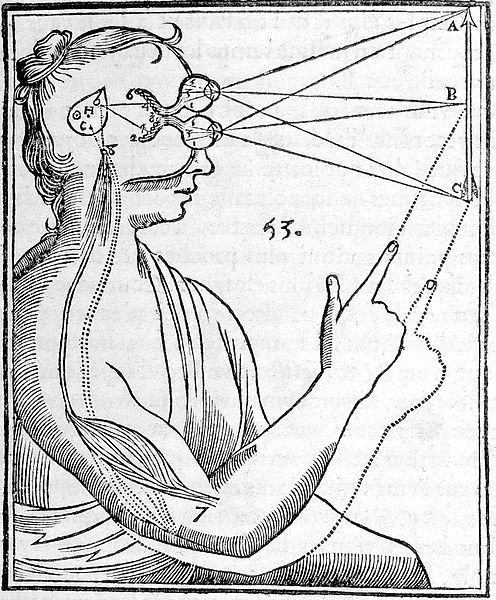

Heute geschlossen
Die #cpu18 ist vorbei und wir brauchen erstmal eine Pause, diesen Donnerstag (14.06.) gibts kein offenes Treffen. Hört doch bis dahin einfach in das DJset von @CouchSofa rein …
Die #cpu18 ist vorbei und wir brauchen erstmal eine Pause, diesen Donnerstag (14.06.) gibts kein offenes Treffen. Hört doch bis dahin einfach in das DJset von @CouchSofa rein …
Vom 08.-10.6.2018 findet in der Mensa der Uni Ulm die erste Chaosparty Ulm statt. Sie ist ein kleineres Chaosevent, bei dem sich viele Technikinteressierte aus ganz Deutschland (und weiter) zusammenkommen um sich gemeinsam ein Wochenende lang in Projekte zu vertiefen und sich über alle möglichen Themen auszutauschen.
Es wird Vorträge und Workshops vor allem zu hardwaretechnischen Themen geben und auch für Verpflegung ist durchgehend gesorgt. Du findest auf unserer Website [https://chaos-party-ulm.de] noch mehr Infos zu dem Event. Sollten Fragen aufkommen, kannst Du uns per Mail unter (kontakt@chaos-party-ulm.de)[mailto:kontakt@chaos-party-ulm.de] oder auf hackint in #cpu erreichen. Wir freuen uns auf Dich!
Kurze Statusmeldung: der Freiraum bleibt heute geschlossen, zu viele sind auf der GPN LOGICAL_OR betrunken.
Nach seinem letzten Vortrag über Reverse-Engineering spricht Jani am Donnerstag 12.04. über Platinenlayout mit KiCad.
Die Slides zu Reverse-Engineering findet ihr hier.
Jetzt, da die Sonne langsam wieder in den Keller scheint, werden wir wieder durstiger. Nur gut, dass im Rahmen des Chaos-Treffs am Montag 16.04. wieder OpenCola gekocht wird ;)
Zutaten sind alle vorhanden, lediglich der Zuckersirup wird gemeinsam im großen Topf zubereitet, so dass sich anschließend jeder seine eigene Rezeptur zusammenstellen kann.
Am Donnerstag in 14 Tagen (29.03.) spricht Ferdinand über Consciousness/das menschliche Bewußtsein. Basis des Vortrags sind die Bücher von Susan Blackmore, Daniel Denett und das Internet.
Die Slides zum Vortrag gibts hier (englisch).
